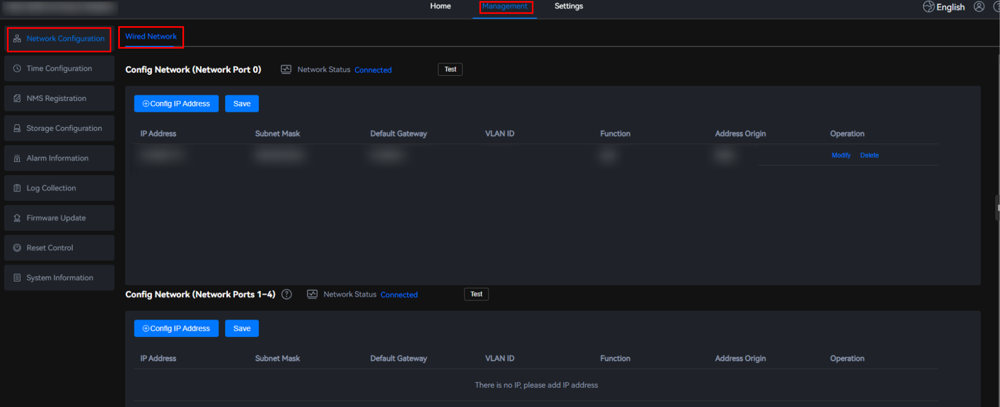
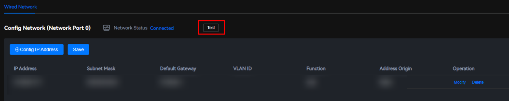
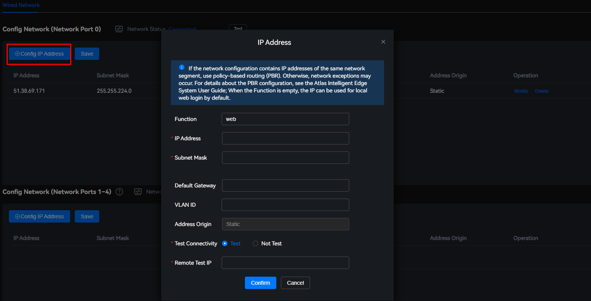
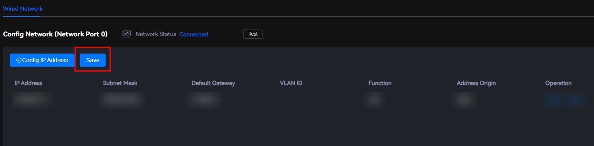
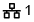
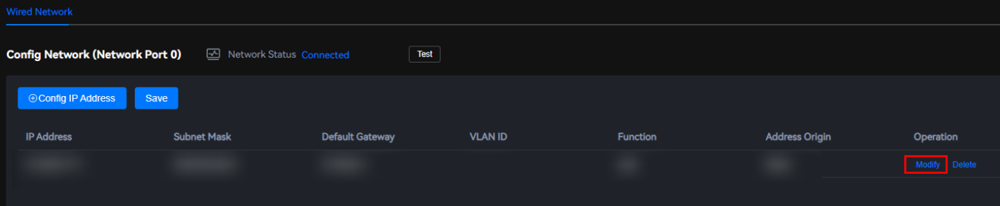
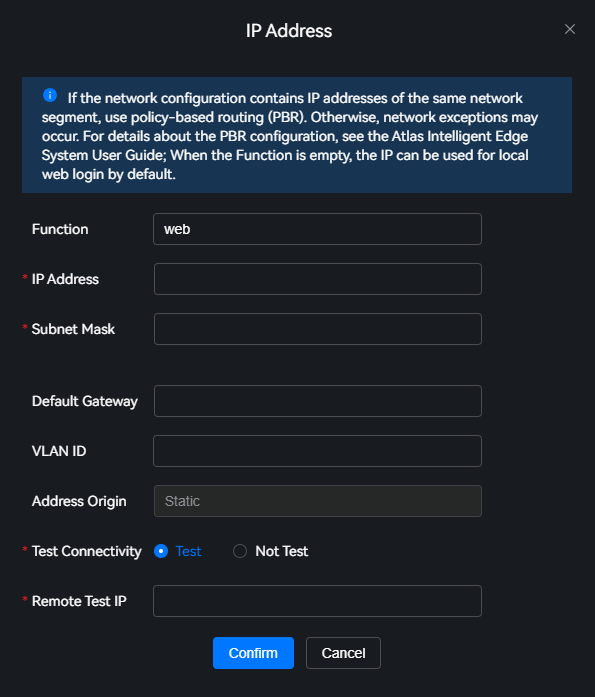
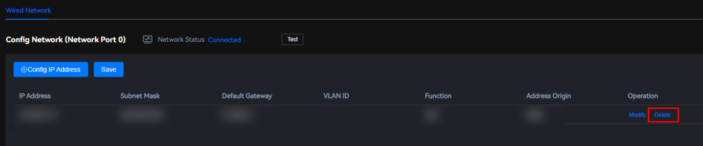

Scenarios
Connect to wired networks to add, modify, or delete IP addresses.
Precautions
- When configuring the network, ensure that the configured IP address is correct and does not conflict with other IP addresses on the network. Configure IP addresses in different network segments for different NICs. Otherwise, the network is abnormal.
- During network configuration, if two network ports are connected to the same LAN, modify the system configuration before modifying the network configuration. Otherwise, the two NICs on the same server may conflict with each other.
- Log in to the backend CLI of the edge device over SSH.
- Run the vi /etc/sysctl.conf command to add configuration items net.ipv4.conf.all.arp_ignore=1 and net.ipv4.conf.all.arp_announce=2. Then, run the :wq command to save the settings and exit.
- Run the sysctl -p command to make the new configuration take effect.
- After the network configuration is complete, the Nginx service will restart. After the restart is complete, the new configuration takes effect and the function is restored. When using the SmartKit to configure the network, add an interval (more than 10s is recommended) between adjacent operations.
- When configuring the default gateway for network ports 1–4, add a management route for network port 0 to prevent the device from being unreachable by the NMS. Run the route add -net <Management IP address>/<Number of subnet mask bits> gw <Default gateway of network port 0> <Network port 0> command to add the route.
Checking the Wired Network
- Choose Management > Network Configuration > Wired Network.Figure 1 Wired network configuration
 - Select the network port for configuring the network, network port 0 or network ports 1–4.
- Network port 0 corresponds to
 of the device hardware.
of the device hardware. - Network ports 1–4 correspond to
 ,
,  ,
,  , and
, and  of the device hardware.
of the device hardware.
- Network port 0 corresponds to
- Click Check.Figure 2 Checking the network

Connected 1000Mb/s after Check Network Status is the latest network status detected by the system.
Adding an IP Address
- Choose Management > Network Configuration > Wired Network.Figure 3 Wired network configuration
- Select the network port for configuring the network, network port 0 or network ports 1–4.
- Network port 0 corresponds to
 of the device hardware.
of the device hardware. - Network ports 1–4 correspond to
 ,
,  ,
,  , and
, and  of the device hardware.
of the device hardware.
- Network port 0 corresponds to
- Click Configure IP Address. The IP Address dialog box is displayed.Figure 4 Adding an IP address
 - Set the IP address parameters by referring to Table 1.
- Click Confirm to save the configuration.
- Click Save to make the configuration take effect.Figure 5 Saving the configuration

Modifying the IP Address Information

- Modifying an IP address will interrupt services on the network port. Exercise caution when performing this operation.
- Modifying IP addresses is risky. The operator must have related network knowledge and modify the IP addresses according to the network plan and operation guide.
- Choose Management > Network Configuration > Wired Network.Figure 6 Wired network configuration
- Select the network port for configuring the network, network port 0 or network ports 1–4.
- Network port 0 corresponds to
 of the device hardware.
of the device hardware. - Network ports 1–4 correspond to ,
 ,
,  , and
, and  of the device hardware.
of the device hardware.
- Network port 0 corresponds to
- Click Modify in the row of the IP address to be modified.Figure 7 Modifying the IP address information
 - In the IP Address dialog box, modify the parameters related to the IP address. For the parameter description, see Table 1.Figure 8 Modifying the IP address information
 - Click Confirm to save the modification.
- Click Save to make the configuration take effect.Figure 9 Saving the configuration
Deleting an IP Address
- A deleted IP address cannot be restored. Exercise caution when performing this operation.
- If the network port has only one IP address, this IP address can be modified but cannot be deleted.
- Choose Management > Network Configuration > Wired Network.Figure 10 Wired network configuration
- Select the network port for configuring the network, network port 0 or network ports 1–4.
- Network port 0 corresponds to
 of the device hardware.
of the device hardware. - Network ports 1–4 correspond to
 ,
,  ,
,  , and
, and  of the device hardware.
of the device hardware.
- Network port 0 corresponds to
- Locate the IP address to be deleted and click Delete in the Operations column. A confirmation dialog box is displayed.Figure 11 Deleting an IP address
 If you delete the only IP address in the configured IP address area, the system displays a message indicating that the IP address cannot be empty.
- Click Confirm to delete the IP address.
- Click Save to make the configuration take effect.Figure 12 Saving the configuration
Parameter Description
Parameter |
Description |
|---|---|
Function |
Specifies the function of the IP address. The value can contain 1 to 32 characters, including letters, digits, and underscores (_). NOTE:
|
IP Address |
Specifies the IPv4 address to be added. A maximum of four IP addresses can be added for the same network port. If the network segment to which the current IP address belongs has been configured in another NIC and you continue to configure it, an exception may occur. |
Subnet Mask |
Specifies the subnet mask corresponding to the IP address. |
Default Gateway |
Specifies the default gateway corresponding to the IP address. Ensure that the default gateway is globally unique. NOTICE:
Adding, modifying, or deleting a gateway may cause connection failures. Exercise caution when performing this operation. |
VLAN ID |
Specifies the VLAN ID corresponding to the IP address. NOTICE:
Network faults may occur during VLAN ID configuration. Carefully consider the network topology, VLAN ID allocation, and VLAN ID isolation policies to ensure network security and performance. |
Address Origin |
Address source. The options are as follows:
|
Test Connectivity |
Specifies whether to test the connectivity of an added or modified IP address.
By default, the connectivity test is performed on the added or modified IP address to prevent device unreachability caused by unavailable IP addresses, improving system reliability. |
Remote Test IP |
Specifies the remote IP address used to test the connectivity of the added or modified IP address. This parameter is required only when Test Connectivity is set to Yes. |